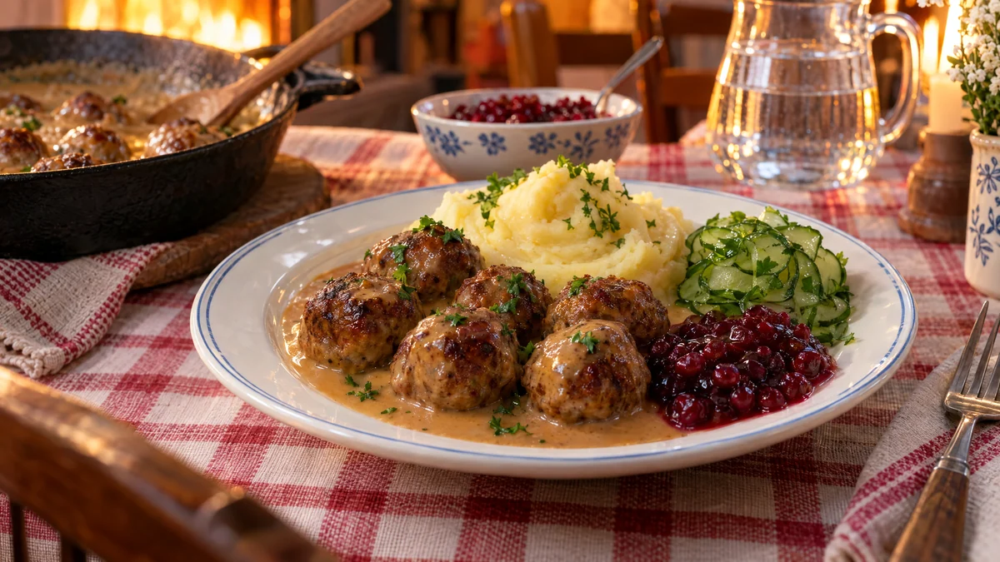

RESTFEST · RECEPTHuvudrätt
Köttbullar utan ägg och mjölk med gräddsås på havregrädde
Ett paket köttfärs, en kall kokt potatis från igår och en skvätt havredryck. Potatisen tar äggets plats och gör köttbullarna mjuka och saftiga, och gräddsåsen blir lika len med havregrädde. Med lingon, pressgurka och potatismos blir Sveriges nationalrätt något alla vid bordet kan äta.
- Förberedelse
- 25 min
- Tillagning
- 25 min
- Portioner
- 4 (ca 40 köttbullar)
- Nivå
- Nybörjare
Bra att veta. Läs alltid innehållsförteckningen. Mjölk och ägg kan gömma sig i margarin, choklad, ströbröd, buljong, korv och bröd. Laktosfritt är inte mjölkfritt, laktosfria produkter innehåller fortfarande mjölkprotein.
 Det här behöver du
Det här behöver du
JÄMFÖRT MED DIN KYL
Tryck på + vid det du behöver köpa.
Köttbullar
Gräddsås
Till servering
Gör så här
- Rör ihop ströbröd och havredryck och låt svälla i 10 minuter.
- Riv löken och den kalla potatisen fint. Blanda dem med ströbrödsblandningen, färs, salt, peppar och kryddpeppar. Arbeta ihop smeten bara tills den är jämn.
- Rulla köttbullar, ca 3 cm, med fuktade händer. Lägg dem på en skärbräda eller en fuktad tallrik.
- Hetta upp margarinet i en stor stekpanna på medelvärme. Stek köttbullarna i omgångar i ca 8 minuter, tills de har fått fin färg runt om och är genomstekta. Skaka pannan då och då, så blir de runda. Lägg dem i en form under folie.
- Strö mjölet i stekpannan med stekfettet och rör i 1 minut. Vispa i havregrädde, vatten och buljongtärning och låt sjuda i 3–4 minuter, tills såsen har tjocknat.
- Smaka av med soja, gelé, salt och peppar. Lägg tillbaka köttbullarna i såsen och låt dem bli varma.
Dekoration och servering
- Lägg en hög potatismos på varje tallrik, köttbullar bredvid och gräddsås över både mos och köttbullar.
- Servera med rårörda lingon, pressgurka och lite hackad persilja.
- Kontrollera innehållsförteckningen på ströbröd, buljongtärning och margarin. Alla sorter är inte fria från mjölk och ägg.
- Köttbullarna går bra att frysa, stekta eller råa på en plåt.
Mått och ugnstemperaturer
Måtten är svenska (dl, msk, tsk, krm). Ugnstemperaturerna gäller vanlig ugn med över- och undervärme; med varmluft, sänk med 20 grader.